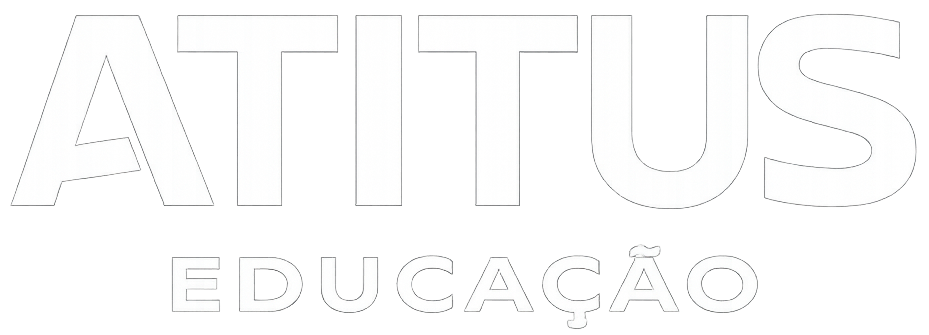
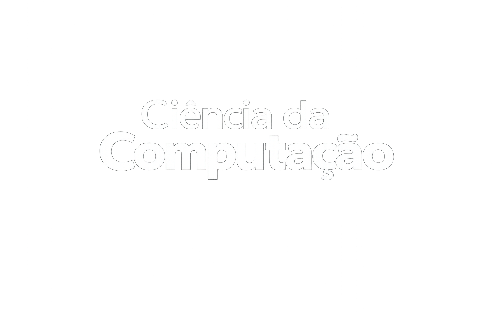

Conheça boas práticas para utilizar a tecnologia com consciência, segurança e responsabilidade.
ExplorarDesafio da Profissão • Prof. Suellen S. Sotille • 2026/01
Integrantes: Wesley Schons • Gabriel Mello


A tecnologia faz parte da rotina das pessoas e, quando utilizada de forma inteligente, melhora os estudos, o trabalho, a comunicação e a qualidade de vida. O uso consciente envolve senso crítico, ética e proteção dos dados pessoais.
O primeiro nome do Windows foi Interface Manager.
A NASA levou o homem à Lua usando apenas 64 KB de RAM.
Criada em 1991, a primeira webcam monitorava uma máquina de café.
Nem toda resposta da IA está correta. Confira as fontes.
Autenticação em dois fatores, backups e cuidado com golpes.
Use a tecnologia para aprender, não apenas para copiar.
Utilize aplicativos como Notion ou Google Agenda para gerenciar tarefas e compromissos.
Aproveite a inteligência artificial para estudar, pesquisar e tirar dúvidas, mas sempre confirme as informações.
Consulte fontes confiáveis antes de compartilhar notícias ou utilizar dados em trabalhos.
Salve documentos na nuvem para acessá-los de qualquer lugar e evitar perdas.
Use senhas fortes e ative a autenticação em duas etapas para aumentar a segurança das suas contas.
Faça pausas regulares e utilize a tecnologia de forma equilibrada para cuidar da saúde, manter o foco e aumentar sua produtividade.
A tecnologia potencializa as capacidades humanas quando utilizada de forma ética, crítica e segura.